Characters
“I grew up in Massachusetts, by the sea, and I remember going to my family dentist, who had this funky fish tank in his office. All kids are attracted to aquariums, and I remember staring at this tank and thinking what a weird view of the world this must be for the fish—it’s like flying into Las Vegas and that’s your first view of America.”
recalls writer-director Andrew Stanton.
Main Characters
-
- Nemo
- Nemo is a curious and impressionable six-year-old, only child who lives with his overprotective, single-parent father, Marlin. Having led a sheltered life, Nemo brims with the excitement of starting school and finally seeing the wonders of the Great Barrier Reef. Despite being born with a withered fin, Nemo yearns for adventure, and as fate takes him far from home, he learns he is capable of doing great things.
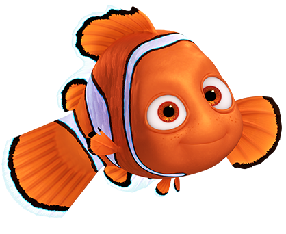 -
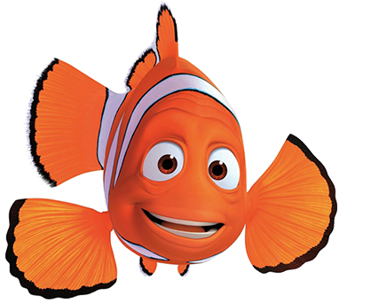
- Marlin
- Sheltered deep within The Great Barrier reef, safe inside his anemone home, lives Marlin. After losing his wife and family to the ocean, Marlin is left alone to raise his only surviving child, Nemo. He vows never to let anything happen to his son. A loving and responsible father, Marlin keeps his noble promise throughout Nemo’s early years. However, Marlin’s fear and distrust of the sea builds, and he struggles with his inability to let go of Nemo as his son begins school. When Nemo is suddenly taken away, Marlin must try to find in himself the courage, wisdom, and faith needed to search the unpredictable ocean to bring his boy home — the very characteristics he needs to allow his son to learn and grow.
-
- Dory
- Throughout the vast ocean you will not find a fish more hospitable, more friendly, or more sociable than Dory. She would love to chat with you all day and tell you her life story, but she can’t. Dory suffers from short term memory loss. Dory is the aquatic Good Samaritan who offers to help Marlin on his journey to find his son. She is certainly an odd partner for such a quest, but her optimism proves an invaluable quality to help Marlin overcome the impossible. To Dory, the glass is always half–full.
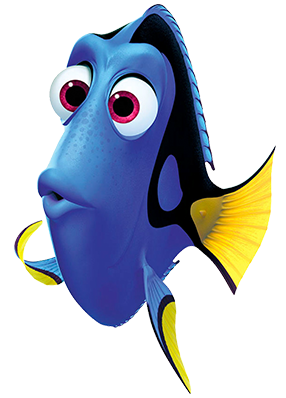
Sub Characters
-
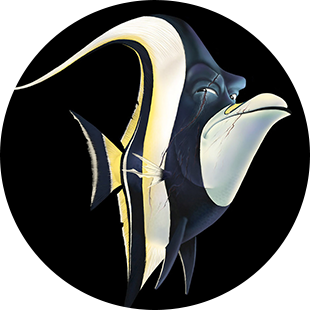
- Gill
- Gill is the maverick of the dentist’s office fish tank and the leader of an eclectic gang of fish. This tough, scarred, one-finned fish was raised in the ocean, but taken at a young age to live in a tank. With Nemo's arrival to the tank, Gill is inspired again to find a way back to the sea.
-
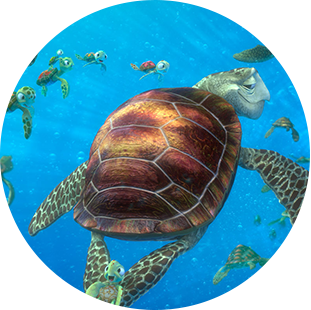
- Turtles
- Crush and his offspring Squirt know how to chill and go with the flow, especially the one created by the East Australian Current. The two have a righteous bond that's totally sweet. After 150 years of living in the ocean, Crush knows a thing or two about being a good parent.
-
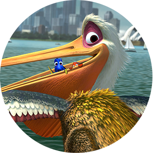
- Nigel
- Nigel is a tough old local bird. He likes to hang out on the docks with his other pelican mates and carry on. But Nigel has a guilty pleasure the others don’t know about; he loves to sneak off and spend hours in the dentist office window, diagnosing dental problems with his fish friends in the tank.
-
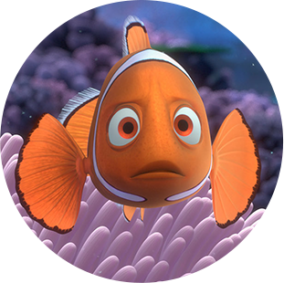
- Coral
- Proud mother-to-be Coral is a freethinker who opts for the more creative name of "Nemo" for one of her babies. Coral provides strength and optimism in her relationship with Marlin and is the first to believe in him when he doubts his parenting skills.
-
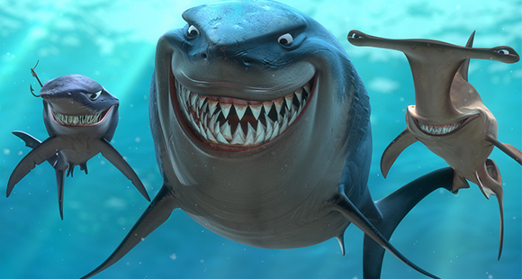
- Sharks
- Bruce, Anchor and Chum are mates. Anchor is cynical; he hates dolphins. Chum is hyperactive; he can’t keep still. Bruce is the jolly leader of the pack. All three are members of a Fish-Eaters Anonymous Group, and are tormented by their natural urge to eat fish and their resulting unpopularity amongst the general ocean population. Consequently, they have embraced a “veggie” lifestyle, allegedly swearing off fish, and living off politically correct kelp instead.
-
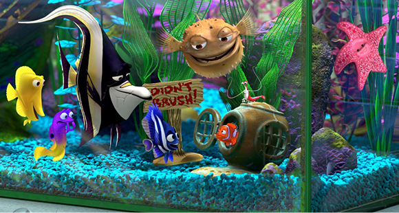
- The Tank Gang
- No matter where you're from—the ocean, eBay, Pet Palace, or mail order—being stuck in a kitschy dentist's aquarium can do things to a fish. Led by escape artist Gill, Peach, Bloat, Gurgle, Deb, Bubbles, and Jacques make life livable with tiki-inspired tank rituals, all the while dreaming of getting back into the Big Blue.
-
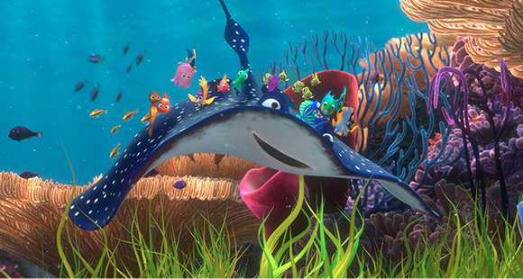
- Mr. Ray's Class
- This school of young, impressionable fish love their tuneful teacher's marine-inspired songs and impromptu oceanography lessons. Riding atop Mr. Ray like an underwater magic carpet, the kids experience the ocean through the eyes of a scientist and true deep sea explorer.
-
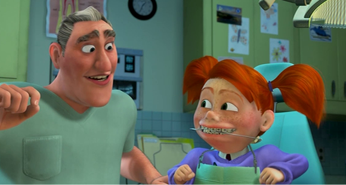
- Dentist / Darla
- Don't be angry with the dentist for taking Nemo—from his point of view, he was rescuing a struggling fish destined to be eaten. The dentist's niece Darla, on the other hand, can't seem to shake her habit of shaking the bags containing her fishy gifts.